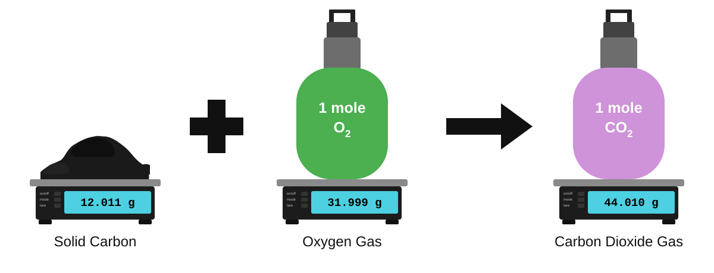

The Mole & Molar Relationships
Start here if grams, particles, and formulas still feel like separate topics. This unit shows you the main bridge in chemistry — building from nomenclature so you can move into chemical reactions and stoichiometry without guessing.
What you need to be able to do
7.1 Start Here: What a Mole Actually Means
If this idea is clear, the rest of the unit stops feeling random.
A mole is a counting unit. One mole always means 6.022 × 1023 representative particles, no matter what substance you are talking about.
Think of it like using a dozen to count eggs, except the chemistry version is enormous because atoms and molecules are so small. You are not memorizing a weird number just to memorize it — you are learning the counting unit that makes chemistry calculations possible.
- For an element, the particles are atoms. For a molecular substance, the particles are molecules. Notice that the counted thing changes with the substance.
- Atoms and molecules are too small to count one by one or weigh individually, so chemists use the mole to connect particle count to measurable mass.
- One mole means the same number of particles every time, but not the same mass every time.
7.1A Mole Concept Spotlight: Same Count, Different Mass
Notice the big idea here: one mole always means the same number of particles, but definitely not the same mass.
The particle type depends on the substance. For carbon, the particles are atoms; for oxygen gas, they are O2 molecules; and for carbon dioxide, they are CO2 molecules. Same mole idea, different particles, different masses.
One black circle represents 1 carbon atom.
One mole of carbon contains 6.022 × 1023 atoms
and has a mass of 12.01 g.
The two red circles together represent 1 oxygen molecule made from two oxygen atoms.
One mole of oxygen contains 6.022 × 1023 molecules
and has a mass of 31.999 g.
The balanced equation shows a 1 : 1 : 1 mole ratio.
This is what you need to notice: the coefficients compare substances in moles first, not in grams.

Use the coefficients in the balanced equation to compare substances in moles, not in grams.
Multiply by molar mass to turn the counted amount into a mass you can actually weigh in the lab.
Do not miss this
- The coefficients tell you the mole ratio.
- They do not mean the masses are equal.
- In this reaction, 12.01 g of carbon reacts with 31.999 g of oxygen to make 44.010 g of carbon dioxide.
7.2 Molar Mass: The Bridge Between Grams and Moles
Moles connect particle counting to mass. The molar mass (symbol: MM) is the number that makes that connection. It tells you the mass of exactly one mole of a substance in g/mol.
Start here when a problem gives you grams. Grams come from the balance, but chemistry comparisons usually happen in moles first. Molar mass is the bridge that lets you switch between those two ideas without losing the meaning of the substance.
For an element, the molar mass is its atomic mass from the periodic table written in g/mol. For a compound, you find the total by adding the mass contribution from each element in the formula.
If this part feels shaky
- If atomic mass values feel unfamiliar, review Unit 03 · Atomic Structure.
- If you need help locating and comparing element data, revisit Unit 05 · Periodic Table & Trends.
Use these five compounds as models. For each one, notice how you multiply the atomic mass by the number of atoms in the formula before adding — that is the calculation pattern you will repeat.
| Substance | Formula | Calculation | Molar Mass |
|---|---|---|---|
| Water | H2O | 2(1.008) + 15.999 | 18.015 g/mol |
| Glucose | C6H12O6 | 6(12.011) + 12(1.008) + 6(15.999) | 180.156 g/mol |
| Sodium chloride | NaCl | 22.990 + 35.453 | 58.443 g/mol |
| Sulfuric acid | H2SO4 | 2(1.008) + 32.065 + 4(15.999) | 98.079 g/mol |
| Calcium carbonate | CaCO3 | 40.078 + 12.011 + 3(15.999) | 100.086 g/mol |
7.3 How to Convert Grams, Moles, and Particles Step by Step
Read this before you start multiplying anything: choose the path first, then do the arithmetic.
Miss this step and the whole conversion falls apart. If you are going between grams and particles, you almost always have to pass through moles in the middle.
Use molar mass for grams, Avogadro's number for particles, and 22.4 L/mol only for gases at STP.
Do not miss this
- The numbers are usually right — the direction of the setup is where things go wrong.
- Ask first: what unit do I have, what unit do I want, and what bridge connects them?
- If the units do not cancel cleanly, the setup is not finished yet.
| Convert From | Convert To | What to Use |
|---|---|---|
| Grams | Moles | Divide by molar mass |
| Moles | Grams | Multiply by molar mass |
| Moles | Particles | Multiply by 6.022 × 10²³ particles/mol |
| Particles | Moles | Divide by 6.022 × 10²³ particles/mol |
| Moles | Liters at STP | Use 22.4 L/mol for gases at STP only |
The wheel below shows the same idea visually. The table tells you which factor to use; the wheel shows you which direction to move.
7.4 Percent Composition: Which Element Contributes the Most Mass?
Percent composition by mass tells you how much of a compound's total mass comes from each element.
Here is the idea: pretend you have 1 mole of the compound. Each element contributes part of that total molar mass. To find the percent for one element, compare that element's mass contribution to the whole.
Notice what this calculation actually does: it connects a chemical formula to what a sample is made of by mass — which is why this shows up again in lab data and empirical-formula problems.
Worked example — Water (H2O, MM = 18.015 g/mol):
%H = (2 atoms × 1.008 g/mol) ÷ 18.015 g/mol × 100 = 11.19% hydrogen
%O = (1 atom × 15.999 g/mol) ÷ 18.015 g/mol × 100 = 88.81% oxygen
Notice that the percentages should add up to 100% or very close after rounding. If they do not, something probably went wrong in the arithmetic.
Why this matters
- Percent composition connects experimental lab data to the empirical formula.
- In combustion-style problems, the measured masses lead to percent composition first.
- From there, you can work back to the simplest whole-number ratio of atoms.
- Be ready to work both directions: from formula to percent and from percent back to formula.
7.5 Empirical and Molecular Formulas: Turning Data into a Formula
The empirical formula shows the smallest whole-number mole ratio of the elements in a compound.
The molecular formula gives the actual number of each type of atom in one molecule. The molecular formula is always a whole-number multiple of the empirical formula.
If this feels shaky, go back to 7.3: masses are not the ratio that matters — you must convert to moles before you decide what the subscripts should be.
Common sticking point
- If formula subscripts still feel shaky, review Unit 06 · Nomenclature before pushing through empirical-formula problems.
- If the mass values themselves are the issue, go back to Unit 05 · Periodic Table & Trends and practice reading atomic masses quickly.
Do not skip the chemistry idea here: masses and percents are not the final ratio. To find an empirical formula, you must convert each element to moles first, because moles are the ratio that matters.
Concrete check
- CH2O is an empirical formula because the ratio 1 : 2 : 1 is already simplest.
- C6H12O6 is a molecular formula because its subscripts reduce to 1 : 2 : 1.
- That means C6H12O6 = 6 × CH2O, so n = 6.
This is a very useful trick. If you assume you have exactly 100 g of the compound, each percent turns directly into grams. For example, 40.0% carbon becomes 40.0 g carbon. Now you have something you can actually convert to moles.
Divide each element's mass by its molar mass. This converts grams into moles and puts every element on the same counting basis. That is what lets you compare them fairly.
Find whichever element has the fewest moles, then divide every mole value by that number. You are rescaling the ratios so the smallest value becomes 1.000. Those new values are your preliminary atom ratios.
Your ratios from Step 3 should be close to whole numbers. If they are not, multiply all ratios by the same small whole number until they become whole numbers together. Common fixes are ×2 for 0.5, ×3 for 0.33, and ×4 for 0.25.
Calculate the molar mass of your empirical formula. Then divide the given molecular molar mass by the empirical formula molar mass: n = MMmolecular / MMempirical. Round n to the nearest whole number, then multiply every subscript in your empirical formula by n to get the final molecular formula.
Next step after Unit 07
Moles become the counting language for reaction problems next. If the grams ↔ moles ↔ particles bridge feels solid, move into chemical reactions and then stoichiometry. That is where this unit starts doing real work.